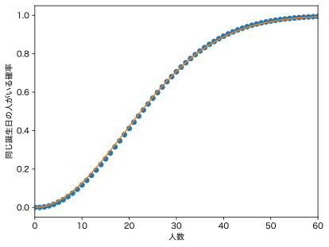

誕生日は $N = 365$ 通りあります。$n$ 人（$n < N$）がパーティを開きました。誕生日が同じ人がいる確率は
\[ 1 - \frac{365}{365} \times \frac{364}{365} \times \frac{363}{365} \times \cdots \times \frac{365 - n + 1}{365} \]です。次の近似式でも計算できます（証明は例えばWikipediaの Birthday problem 参照）：
\[ 1 - e^{-n^2/(2N)} \]Pythonで試してみましょう：
import matplotlib.pyplot as plt
import numpy as np
a = []
p = 1
for i in range(366):
a.append(1 - p)
p *= (365 - i) / 365
x = np.arange(0, 366)
plt.plot(x, a, "o")
plt.plot(x, 1 - np.exp(-x**2/(2*365)))
plt.xlim(0, 60)
plt.xlabel("人数")
plt.ylabel("同じ誕生日の人がいる確率")

オレンジの線が指数関数を使った近似式です。
$n = \sqrt{N}$ で確率が $1 - e^{-1/2} \approx 0.4$ になります。もっと大雑把な議論をすれば、$n$ 人いれば $n(n-1)/2 \approx n^2/2$ のペアができ、各ペアの誕生日が同じ確率は $1/N$ なので、どれかのペアの誕生日が同じ確率はおよそ $n^2/2 \times 1/N$、これが $1/2$ になるのは $n = \sqrt{N}$ のときだということもできます。つまり、かなりの確率で $N$ 通りのものがぶつかるには $n = \sqrt{N}$ 個ほどあればいいことになります。
2021年に新型コロナ感染症ワクチン接種券が配られました。ところが接種券を発行するのは各自治体だったため、10桁の接種券番号も自治体ごとに付番されました。その後、自治体の枠を越えた大規模接種センターがつくられましたが、当初の予約システムでは接種券番号をユニークキーとしていたらしく、同じ接種券番号の人がいると予約できないという問題が発生しました。仮に番号がランダムだったとして、番号の衝突（重複）が起こる確率はどれくらいでしょうか。
接種券の枚数を1億枚 $n = 10^8$ とします。10桁の番号は $N = 10^{10}$ 通りです。計算してみれば、
\[ 1 - e^{-n^2/(2N)} \approx 1 \]ですので、ほぼ確率 1 で衝突が起こります。
では、何桁の番号であれば、各自治体がばらばらに付番しても、衝突が起こらないといえるでしょうか。
うんと大きい数は10進法でない符号化をすることが多いので、ビット数で表すほうが便利です。$N$ が80ビットなら $1 - e^{-n^2/(2N)}$ はおよそ $4 \times 10^{-9}$、100ビットならおよそ $4 \times 10^{-15}$ ですので、衝突はまず起こらないといえます。
ツイッター上では接種券番号をUUID（次の項参照）にすればよかったという声もありました。
128ビットのランダムな値を表す UUID（Universally Unique Identifier）というものが RFC 4122 で定められています。したが、改訂されて、現在は RFC 9562 が最新のドキュメントです。
UUIDにはいくつかのバージョンがありますが、よく使われているのは、乱数ベースのバージョン4のUUIDです。128ビットですが、そのうち6ビットは固定値です。
Pythonの標準ライブラリには uuid というモジュールがあります。
import uuid uuid.uuid4() # バージョン4のUUIDを生成
UUID('3585b7a9-e35a-433b-be8e-3916c75f6240')
二つめのハイフンの直後の数字 4 がバージョン番号を表します。また、三つめのハイフンの直後の2ビットは 1 0 に固定されています。これらのため、128ビットのうち6ビットは固定値になります。
LinuxやMacには uuidgen というコマンドがあります。Macのものはバージョン4固定です。Linuxのものはオプション -r でバージョン4（乱数ベース）、オプション -t でバージョン1（時刻ベース）になります。デフォルトは通常はバージョン4です。
RFC 4122ではバージョン1〜5のUUIDが定められていましたが、RFC 9562ではバージョン6〜8が追加されました。バージョン7の先頭48ビットはタイムスタンプ（1970年元旦からのミリ秒）です。今後はランダムなバージョン4か時刻ベースのバージョン7のどちらかを選ぶと良さそうです。Pythonのuuidモジュールではバージョン7のUUIDは uuid.uuid7() で求められます。
バージョン4のUUIDは $N = 2^{122}$ 通りあります。ランダムに生成して衝突が起こる（同じUUIDが発生する）には $n = \sqrt{N} = 2^{61}$ 個ほどのUUIDが必要です。毎秒1000個のUUIDを作れば7千万年くらいで衝突が起きるでしょう。大きな天体が地球に衝突するのとどちらが早いでしょうか。
ULID（Universally Unique Lexicographically Sortable Identifier）はUUIDを改良したもので、UUIDと同じ128ビットでありながら、UUIDは36文字ですが、ULIDは26文字で表されます。128ビットのうち、先頭の48ビットはタイムスタンプで、UNIX時刻をミリ秒の単位で表したものです。10889年まで桁あふれしません。残りの80ビットがランダムな部分です。文字列としてソートすると、時刻順に並びます（lexicographically sortable）。
Pythonではいくつかのライブラリがありますが、ここでは python-ulid を使ってみます。pip install python-ulid でインストールします
from ulid import ULID ULID()
ULID(01F63ZWFQGSMGM3XGXBE8CTRDT)